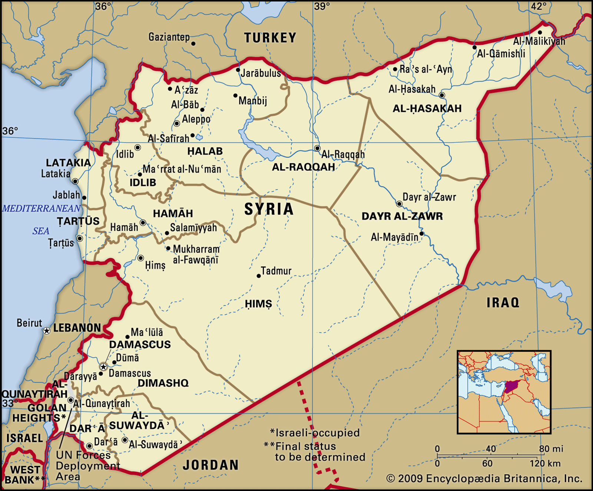
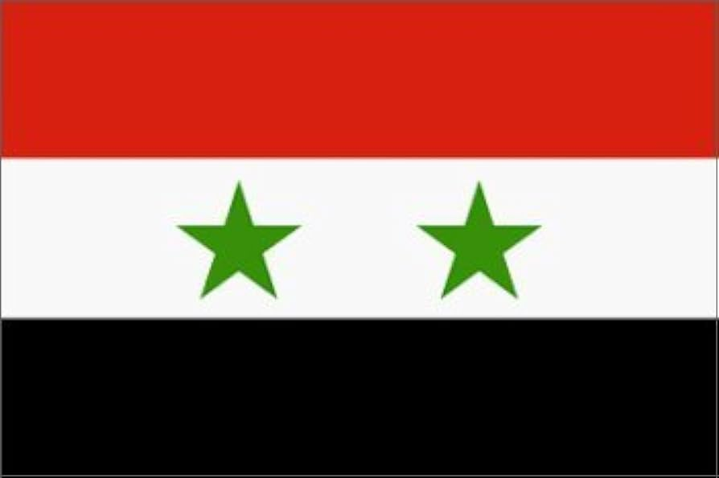

|  | I am from Aleppo, Syria
|  | |
|
I am taking CSC to learn more about coding, designing a website and the internet in general. In this modern time i feel like everyone should have a background of computers and coding to help them in their careers.